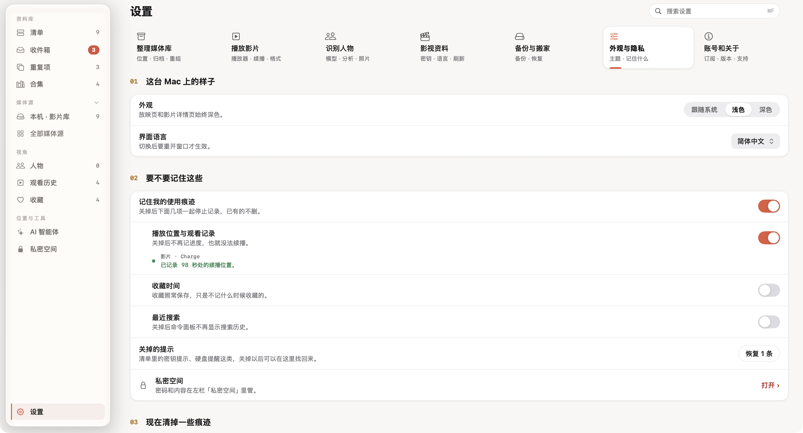

影片可以重新找到，但自己整理的名称、海报、人物和合集往往花了更多时间。备份前，先分清需要保护的是影片原文件，还是 Nsurator 里的整理成果。两者都需要有去处。
- 了解备份包含哪些内容
- 建立一次可找到的备份
- 迁移资料并检查影片位置
先看清备份里有什么
打开「设置 → 备份与搬家」，页面会列出当前备份的内容。影片资料库、海报与剧照、修改过的影视资料、人脸底库、合集与收藏，以及加入清单的文件夹信息，都属于需要保留的整理成果。
备份包不包含视频文件本身。 你仍需要单独保管影片所在的硬盘或文件夹。TMDB 密钥、订阅与授权、预览缓存也不放进备份包，迁移后按需要重新设置。
私密空间默认不包含在普通备份中。如果需要包含它，在页面打开相应选项，并由你自己完成身份验证。
做一次备份，并确认能找到它
- 选择一个自己能长期找到的备份位置。
- 点击「立即备份」，等待完成提示。
- 核对上次备份时间与成功状态。
- 使用「在访达中显示」，确认备份文件确实位于预期位置。
不要只依据按钮是否点过判断完成。成功状态、时间和实际文件三者一致，才说明这一份备份已经生成。截图展示的是演示资料库的一次真实备份。
可以按需要设置每天或每周自动备份。当前界面说明：Nsurator 打开时才会按计划备份，并保留最近 5 份。因此，长期没有打开 App 时，不要假设它已经在后台替你完成了备份。
迁移时，把资料和影片分别带走
使用「打一个包带走…」准备迁移资料；同时，把原来的影片文件夹复制到新设备或继续使用同一块外置硬盘。备份包体积小于影片库是正常的，因为影片本身没有装进去。
在新 Mac 上，可以在首次启动时选择从备份恢复，也可以使用「设置 → 备份与搬家 → 选择备份包…」。按恢复界面核对来源、目标位置和需要处理的项目，再继续。
恢复后，检查几部熟悉的影片：海报和标题是否还在，收藏和合集是否正确，实际文件是否能找到并打开。影片位置发生变化或需要重新授予访问权限时，按 App 的提示处理。
决定这台 Mac 要记住哪些使用痕迹
迁移完成后，再去「设置 → 外观与隐私」确认观看记录等选项。保存进度方便续播，关闭记录则意味着新的播放位置不再被记住；这项选择应该符合你在这台 Mac 上的使用习惯。

准备重整资料、搬动大量文件或尝试新规则之前，也可以主动做一次备份。把备份作为整理前的固定步骤，比遇到问题后再寻找恢复办法更可靠。
步骤与界面依据 2026 年 9 月的本地版本核对。部分收藏与续播进度为演示数据，图片来源见素材署名。